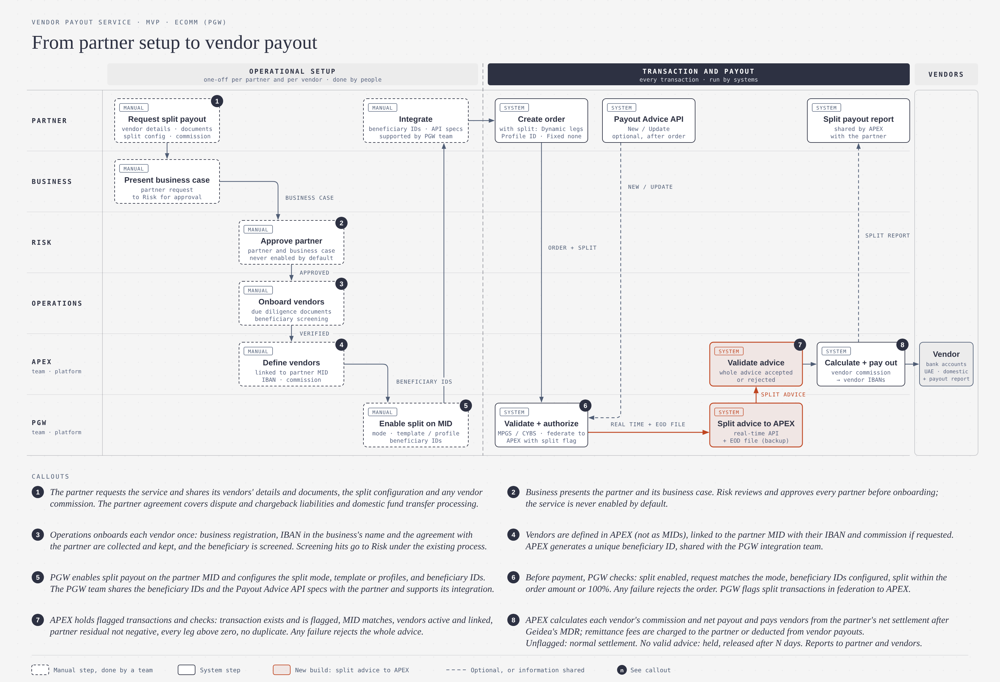

Product and implementation requirements · Ecomm (PGW) · Version 1.6 · 10-Nov-2026
1. Introduction
The Vendor Payout Service lets a partner (a Geidea merchant) instruct Geidea to pay part of each sale to its own vendors (suppliers). The customer pays once, on the partner’s MID, and the transaction is authorized and cleared with the scheme exactly as today. After settlement, Geidea transfers each vendor’s share to the vendor’s own UAE bank account under Geidea’s domestic fund transfer service and settles the remainder to the partner.
This is the working requirements document for implementation. It carries the approved product design and sets out the work items for PGW and APEX, and is kept current as solutioning progresses with the APEX team and its platform vendor.
Scope
Channel: Ecomm through PGW only.
Split modes: Dynamic, Fixed and Profile based.
Currency: AED only. The partner and its vendors are paid in AED.
Vendors: UAE businesses holding a business registration (trade license). Payouts are domestic only (UAE IBANs, no cross-border).
Partners: select large partners, approved case by case. Unlicensed aggregators are excluded.
Expected volume: 10 to 20 partners a year.
Terms used in this document
| Term | Meaning |
|---|---|
| Partner | The Geidea merchant that sells to the customer and instructs Geidea how to split the proceeds. Holds a normal Geidea MID. |
| Vendor / beneficiary | A business the partner pays out to. Defined in APEX as a vendor definition, not a MID. |
| Beneficiary ID | Unique ID APEX generates for each vendor definition. The only vendor identifier the partner and PGW use. |
| Split advice | The instruction for one transaction: which beneficiaries receive how much. |
| Split flag | Marker PGW sets on a transaction in its federation to APEX when a split advice is expected. APEX holds only flagged transactions. |
| Deferred split | Order created without split detail, where the partner declares (deferredSplit) that it will send the advice later through the Payout Advice API. |
| Residual | What remains of the partner’s settlement after vendor payouts and remittance fees; settled to the partner. |
| Remittance fee | Fee charged per payout (each vendor transfer and the partner’s own payout). |
| N | Days, set per partner MID, after which a flagged transaction without a valid advice is released to the partner. |
| EOD split advice file | Day-end file from PGW to APEX carrying the day’s advices; backup and update channel to the real-time API. |
| PENDING_MATCH | Status of an advice APEX received before the transaction itself reached APEX. |
2. Use Cases
View it visually| Use case | Example | Typical mode |
|---|---|---|
| Marketplace | A customer buys from several sellers in one checkout; each seller receives its share. | Dynamic |
| Delivery platform | An order payment is shared between the restaurant or store and the platform. | Dynamic |
| Aggregator with standard terms | An insurance aggregator applies a different, pre-agreed split per insurance provider. | Profile |
| Standing revenue share | A business always passes the same share of every sale to a supplier. | Fixed |
3. Solution Overview
The solution has two parts. The operational setup is done once per partner and per vendor, by people, through agreed operational routes. The transaction and payout flow runs on every transaction, entirely in Geidea systems. Figure 1 shows both end to end. Section 5 describes the operational setup, and sections 6 and 7 what APEX and PGW need to deliver.
3.1 Solution at a glance

Figure 1. From partner setup to vendor payout
3.2 Split modes
View it visuallyEach partner MID uses one split mode.
| Mode | How the split is defined | What the partner sends |
|---|---|---|
| Dynamic | The partner sends the split with each transaction. | Vendor legs in the order creation request, or later through the Payout Advice API (deferred split). |
| Fixed | One split template, configured by Geidea in PGW, applies to every transaction. | Nothing. PGW applies the template to every order. |
| Profile | Geidea configures a catalog of split templates in PGW, each with a profile ID. | A profile ID in the order creation request, or later through the Payout Advice API (deferred split). |
Rules common to all modes
A leg names a beneficiary ID and a value. The value is either an amount or a percentage of the gross transaction amount, never both.
All legs of one advice use the same split type (all amounts or all percentages).
Percentages are converted to amounts by APEX, not by PGW. Each amount is rounded to 2 decimals; the partner’s residual absorbs the rounding difference.
Templates and profiles are configured by Geidea only. The partner has no access to split configuration.
A split advice carries beneficiary IDs and values only. Bank details always come from Geidea’s records, never from the partner’s request.
3.3 Design principles
Geidea controls who is paid. Vendors are verified and defined by Geidea. A partner can only pay vendors defined against its own MID.
A vendor is not a merchant. Vendors are vendor definitions in APEX, not MIDs. They have no products, channels, users or portal access.
Payouts never exceed the partner’s net. The partner’s residual can never go negative and no vendor leg can be zeroed by commission or fees.
All or nothing. An advice is processed in full or rejected in full. A partial split is never paid.
Fail safe, not fail open. PGW flags every split transaction in its federation to APEX. APEX holds flagged transactions until a valid advice is processed, so a missing or failed advice delays the partner’s settlement rather than paying vendor money to the partner.
Real-time advice, settlement-time payout. Split advices reach APEX in real time through an API, with a day-end file as backup and update channel. Payouts still run with settlement.
Fully automated. Vendor payouts and the partner’s residual run without any manual finance step.
The scheme transaction is unchanged. Authorization and clearing work as today; federation to APEX only gains the split flag.
Risk approves every partner. The service is never enabled by default.
4. Money Flow
View it visually4.1 How funds move
APEX calculates the partner’s settlement for the transaction and deducts Geidea’s MDR and VAT on the MDR. The remainder is the partner’s net.
APEX makes the vendor payouts from the partner’s net. Whether a separate staging account is used, or APEX posts the entries directly from the merchant payout account, is to be defined by Finance.
For a transaction with a valid split advice, APEX calculates each vendor’s payout: split amount (converted from a percentage of the gross transaction amount where needed), minus the commission configured on the vendor definition, if any, minus the remittance fee when the partner MID is set to deduct it from vendor payouts, rounded to 2 decimals.
A remittance fee is charged for each payout: every vendor transfer and the partner’s own payout of its residual. It is configured on the partner MID, with any applicable VAT. For vendor transfers, an option on the partner MID sets who bears the fee: the partner (deducted from its residual) or each vendor (deducted from that vendor’s payout). The fee on the partner’s own payout is always deducted from its residual.
Commission deducted from a vendor’s leg stays with the partner and reaches it in its residual.
APEX transfers each vendor’s net payout to its IBAN and settles the residual to the partner.
Geidea’s revenue on the transaction is its MDR. Geidea invoices the partner VAT on its MDR for the full transaction amount, however the transaction is split; any invoicing between the partner and its vendors is the partner’s own matter. The movement of funds between accounts, its accounting, and VAT handling on vendor commission and remittance fees are to be defined by Finance.
4.2 Worked example
View it visuallyTransaction AED 1,000. Geidea MDR 1% (VAT on MDR left out for simplicity). An amount split across three vendors; two have a commission configured. A remittance fee of AED 1.00 per payout (illustrative) is set on the partner MID. The transaction ends in four payouts: three to the vendors and one to the partner.
Option 1 – partner bears the transfer cost of all payouts
| Vendor | Split amount | Commission | Commission amount | Net payout |
|---|---|---|---|---|
| Vendor A | 500.00 | 2.00% | 10.00 | 490.00 |
| Vendor B | 300.00 | 1.50% | 4.50 | 295.50 |
| Vendor C | 100.00 | None | 0.00 | 100.00 |
| Total | 900.00 | 14.50 | 885.50 |
| Partner settlement | AED |
|---|---|
| Transaction amount less Geidea MDR (1,000.00 − 10.00) | 990.00 |
| Less: net payouts to vendors (payouts 1 to 3) | 885.50 |
| Less: remittance fees (4 payouts × 1.00) | 4.00 |
| Residual paid to the partner (payout 4: 90.00 unallocated after MDR + 14.50 commission − 4.00 remittance fees) | 100.50 |
Option 2 – each vendor bears its own transfer cost
The same transaction, with the partner MID set to deduct the remittance fee from each vendor’s payout. The fee on the partner’s own payout is still charged to the partner.
| Vendor | Split amount | Commission amount | Remittance fee | Net payout |
|---|---|---|---|---|
| Vendor A | 500.00 | 10.00 | 1.00 | 489.00 |
| Vendor B | 300.00 | 4.50 | 1.00 | 294.50 |
| Vendor C | 100.00 | 0.00 | 1.00 | 99.00 |
| Total | 900.00 | 14.50 | 3.00 | 882.50 |
| Partner settlement | AED |
|---|---|
| Transaction amount less Geidea MDR (1,000.00 − 10.00) | 990.00 |
| Less: net payouts to vendors (payouts 1 to 3) | 882.50 |
| Less: remittance fees deducted from vendor payouts, to Geidea (3 × 1.00) | 3.00 |
| Less: remittance fee on the partner’s payout (1 × 1.00) | 1.00 |
| Residual paid to the partner (payout 4: 90.00 unallocated after MDR + 14.50 commission − 1.00 remittance fee) | 103.50 |
4.3 Outcomes
| Situation | What happens |
|---|---|
| Transaction not flagged for split | Settles to the partner through the normal process, after Geidea’s MDR. |
| Flagged, valid advice processed | Vendors receive their net payouts; the partner receives the residual. |
| Flagged, advice rejected | Nothing is paid to vendors; the transaction stays held. The rejection and its reason appear in the split payout report. The partner may send a corrected, complete advice through the Payout Advice API. |
| Flagged, no advice received | The transaction stays held (for example, a deferred split the partner never sent, or an advice lost in transit and not in the day-end file). |
| Flagged, no valid advice within N days | Released to the partner after Geidea’s MDR, and listed in an exception report for Operations and Finance. N is set per partner MID, can be zero, and counts from the transaction’s scheduled payout date. |
| Advice received before the transaction | Parked as PENDING_MATCH and linked when the transaction arrives; rejected with a reason if still unmatched at day end. |
| Advice in API but missing in the day-end file | Marked as mismatched; settlement held until resolved. |
| Transfer to a vendor fails | Existing exception process: retry up to the configured limit, then an exception record, with the case shown in the split payout report. Geidea contacts the partner only, never the vendor. |
5. Partner and Vendor Enablement (Operational)
View it visuallyPartner and vendor setup is operational. It is handled by the teams below through agreed operational routes (for example, an email from Business carrying the vendor details), and is detailed in the Operations SOP. No system build is needed for these steps in the MVP.
5.1 Partner eligibility and agreement
The service is offered only to select large partners, case by case. Unlicensed aggregators are excluded.
Business presents each partner request and its business case to Risk. Risk reviews and approves the partner before any onboarding; the service is never enabled by default.
The partner agreement is revisited by Business with Legal so that it covers the payout service and its liabilities: dispute and chargeback liability, refunds and chargebacks deducted from the partner, recovery of any shortfall, and terms related to domestic fund transfer processing.
5.2 Setup steps
View it visually| # | Step | Done by | Result |
|---|---|---|---|
| 1 | Request the service and share the vendors’ details and documents (business registration, relationship or contract with the partner, IBAN), the split configuration and any vendor commission. | Partner | Request with Business |
| 2 | Present the partner request and its business case to Risk. | Business | Request with Risk |
| 3 | Review and approve the partner and its business case. | Risk | Partner approved |
| 4 | Onboard each vendor once: collect and check the due diligence documents (business registration, IBAN in the business’s name, agreement or contract with the partner) and keep them on record; screen the beneficiary. Screening hits go to Risk under the existing process. | Operations | Vendors verified |
| 5 | Create the vendor definitions, linked to the partner MID with IBAN and any commission. Enable split payout on the partner MID with remittance fee, fee-bearer option and N. Share the beneficiary IDs with the PGW integration team. | APEX team | Beneficiary IDs |
| 6 | Enable split payout on the partner MID and configure the split mode, template or profiles, and beneficiary IDs (section 7.1). | PGW integration team | Partner configured |
| 7 | Share the beneficiary IDs and the API specs with the partner and support its integration. | PGW integration team | Partner integrated |
| 8 | Go live. | Partner | Live |
Due diligence and screening are done once, when a vendor is onboarded, not on every payout. The documents are kept on record to support each payout (for example, under the Central Bank travel rule). New vendors, changes to a vendor’s details or commission, and deactivation follow the same operational route. Vendors have no portal access; Geidea communicates with the partner only.
6. APEX
This section sets out what APEX needs to deliver. How each item is built, including the API and file formats, is for the APEX team to define with its platform vendor; structures shown here are the current working proposal.
6.1 Vendor definition
APEX holds a vendor definition for each vendor, identified by a unique beneficiary ID generated by APEX. A vendor definition is not a MID.
It holds at least the vendor’s name and IBAN, and is linked to the partner MID, so a partner can only pay its own vendors.
A commission (fixed or percentage) can be set at vendor level when the partner requests it.
A vendor can be activated and deactivated; a deactivated vendor can no longer be paid.
Vendor definitions are created and maintained by the APEX team from the operational setup (section 5).
6.2 Split payout enablement on the partner MID
| Setting | Purpose |
|---|---|
| Split payout enabled | Identifies a partner MID whose settlement follows the money flow in section 4. |
| Remittance fee | Fee per payout (each vendor transfer and the partner’s own payout), with any applicable VAT. |
| Fee bearer for vendor transfers | Partner (deducted from residual) or vendor (deducted from each vendor’s payout). The fee on the partner’s own payout is always the partner’s. |
| N (days) | Days after which a flagged transaction without a valid advice is released to the partner. Can be zero. |
The payout cap (%) does not apply to split payout partners. The payout schedule (scheme schedule, matched status or advance payout, as configured on the MID) continues to apply.
6.3 Hold of flagged transactions
APEX receives the split flag with the transaction in PGW’s federation (real-time Create Transaction API and the day-end transaction file).
Unflagged transactions of a split-enabled MID settle to the partner as normal.
A flagged transaction is held from payout until a valid advice is PROCESSED for it.
If no valid advice is processed within N days of the transaction’s scheduled payout date — whether the advice was never received or was rejected and not corrected — APEX releases the transaction to the partner after Geidea’s MDR, sets the advice status to RELEASED where one exists, and lists the transaction in an exception report for Operations and Finance. The timer runs on the flagged transaction, not on an advice record.
6.4 Split advice intake
APEX receives split advices from PGW through two channels, following the same model as transaction federation today.
Real-time Split Advice API
PGW sends each advice as soon as it has one: at payment success for a split sent with the order, and on every Payout Advice API call. One request can carry several advices. Working structure (APEX to finalise):
<SplitAdvices>
<SplitAdvice>
<Action>A | U</Action> <!-- A = create, U = update -->
<Merchant>partner MID</Merchant>
<Transaction_Reference>interSystemID</Transaction_Reference>
<Split_Rules>
<Split_Rule>
<BeneficiaryID>BEN000301</BeneficiaryID>
<Percentage></Percentage> <!-- either Percentage ... -->
<Amount>600.00</Amount> <!-- ... or Amount, not both -->
</Split_Rule>
</Split_Rules>
</SplitAdvice>
</SplitAdvices>
| PGW / product term | APEX structure |
|---|---|
| Partner (split-enabled merchant) | <Merchant> MID |
| Beneficiary / beneficiaryId | <BeneficiaryID> (APEX may name it PartnerID; “partner” in this document means the merchant) |
| Payout Advice API NEW / UPDATE | <Action> A / U |
| interSystemID | <Transaction_Reference> |
| Partner residual | Settlement to the merchant |
The API runs the structural checks synchronously and returns them in the response: split enabled on the MID; every beneficiary found, active and linked to the MID; MID matches the transaction; transaction carries the split flag; one of percentage or amount per rule; A only when no advice exists for the transaction; U only when the existing advice is CREATED, REJECTED or PENDING_MATCH. Amount validation runs later (section 6.5).
Transaction not yet on APEX
An advice that arrives before its transaction is not rejected. APEX parks it as PENDING_MATCH and links it when the transaction arrives. If still unmatched at day end, it is rejected with a reason code so the partner sees it in the split payout report.
Day-end split advice file
PGW sends a day-end file after the Ecomm cut-off (midnight) with every advice of the day, including updates. It is the backup to the API and the channel for updates. APEX reconciles it against the API:
| Case | APEX action |
|---|---|
| Advice in the API and in the file, same split | No action. |
| Advice in the file with a different split | Overwrite with the file’s split and process. |
| Advice in the file, not received over the API | Process as new (covers an API failure). |
| Advice received over the API, missing in the file | Mark as mismatched and hold settlement until resolved. |
| No file received | Process with what was received over the API. |
The file carries a trailer with the record count. PGW sends an empty file with a zero count on days with no advices, so APEX can tell “no advices today” from “file not received”. File format to be defined by APEX.
6.5 Amount validation
Run by APEX as a scheduled process once pricing is available (in-call validation if the platform vendor can support it). Any failure rejects the whole advice with a reason code.
| Rule | Check |
|---|---|
| Rule 1 – partner residual not negative | net − Σ advised beneficiary amounts + Σ beneficiary commissions − remittance fees borne by the partner ≥ 0 (net = transaction amount − MDR − VAT on MDR) |
| Rule 2 – every leg above zero | advised amount − commission − remittance fee (only when the vendor bears it) > 0, for every beneficiary |
| Single payout | A transaction is never paid out twice. |
“Split ≤ net” is not a sufficient check: it passes advices that leave the partner negative once fees are taken, and rejects valid advices where vendor commission covers the gap. Examples (transaction 1,000, MDR 10, VAT 0.50, net 989.50, fee 1.00 per payout, three beneficiaries at 2% commission):
| Fee bearer | Advised | Commission | Partner residual | Result |
|---|---|---|---|---|
| Partner | 400 / 300 / 250 = 950 | 19.00 | 989.50 − 950 + 19 − 4 = 54.50 | Valid |
| Partner | 400 / 300 / 300 = 1,000 | 20.00 | 989.50 − 1,000 + 20 − 4 = 5.50 | Valid (above net, covered by commission) |
| Partner | 400 / 300 / 310 = 1,010 | 20.20 | 989.50 − 1,010 + 20.20 − 4 = −4.30 | Reject (Rule 1) |
| Vendor | 400 / 300 / 250 = 950 | 19.00 | 989.50 − 950 + 19 − 1 = 57.50 | Valid; vendors receive 391 / 293 / 244 |
| Vendor | one leg of 0.80 | 0.02 | — | Reject (Rule 2): 0.80 − 0.02 − 1.00 = −0.22 |
| Either | one leg of 4.00, fixed commission 5.00 | 5.00 | — | Reject (Rule 2) |
Advice statuses
| Status | Meaning |
|---|---|
| CREATED | Received and passed structural checks; awaiting amount validation and payout. |
| PENDING_MATCH | Received before the transaction reached APEX. |
| REJECTED | Failed a check; reason code recorded. Can be corrected with U within N days. |
| PROCESSED | Paid out to vendors and residual settled. No further updates. |
| RELEASED | N days passed without a valid advice; settled to the partner after MDR. No further updates. |
Reason codes are shared with PGW and appear in the split payout report so the partner knows what to fix.
6.6 Calculation and payout
View it visuallyConvert percentage splits to amounts against the gross transaction amount; round each to 2 decimals.
Calculate each vendor’s commission and net payout, and the partner’s residual (section 4). Rounding differences go to the residual.
Make the vendor payouts from the partner’s net as domestic fund transfers to each vendor’s IBAN, deduct remittance fees as set on the partner MID, and settle the residual to the partner, with no manual finance step. Account mechanics as defined by Finance.
Handle failed transfers through the existing exception process.
6.7 Reporting
Split payout report to the partner, per transaction: transaction amount, Geidea’s MDR, amount paid to each vendor, commission recovered from each vendor, remittance fees, residual, advice status and any rejection or failure reason. This is the partner’s channel for the outcome of its advices.
Payout report to each vendor: amount received against each transaction reference and any remittance fee deducted.
FinOps screen in APEX: split advices with filters (partner, status, date) and export.
Exception report: transactions released after N days, mismatched advices, failed transfers.
Finance and reconciliation reports as required by Finance. Partner and vendor report content comes from Business. Format and delivery to be defined with APEX.
6.8 APEX work items
| # | Work item | Section |
|---|---|---|
| APX-01 | Vendor definition with APEX-generated beneficiary ID, name, IBAN, partner MID link, optional commission, activation and deactivation. | 6.1 |
| APX-02 | Split payout settings on the partner MID: enabled flag, remittance fee, fee-bearer option, N. | 6.2 |
| APX-03 | Accept the split flag in transaction federation (Create Transaction API and day-end transaction file). | 6.3 |
| APX-04 | Hold flagged transactions from payout; release after N days from the scheduled payout date; exception report. | 6.3 |
| APX-05 | Real-time Split Advice API (A/U) with synchronous structural checks and response codes; store advices with status. | 6.4 |
| APX-06 | PENDING_MATCH parking, matching on transaction arrival, day-end rejection with reason. | 6.4 |
| APX-07 | Day-end split advice file intake: reconciliation against the API, trailer check, empty-file handling, mismatch hold. | 6.4 |
| APX-08 | Amount validation: Rule 1, Rule 2, single payout; percentage conversion on the gross amount; rounding. | 6.5 |
| APX-09 | Advice statuses (CREATED, PENDING_MATCH, REJECTED, PROCESSED, RELEASED) and reason codes. | 6.5 |
| APX-10 | Payout calculation and execution: commission, remittance fees per fee-bearer option, domestic fund transfers, residual; payout cap not applied; failed-transfer exception handling. | 6.6 |
| APX-11 | Accounting entries and account mechanics as defined by Finance. | 4.1, 6.6 |
| APX-12 | Split payout report (partner), vendor payout report, exception report, Finance reports. | 6.7 |
| APX-13 | FinOps screen with filters and export. | 6.7 |
7. PGW (Ecomm)
7.1 Configuration
Set by the PGW integration team per partner MID, from the operational setup in section 5.2. The partner has no access.
| Setting | Purpose |
|---|---|
| Split payout enabled | Turns the service on for the MID. Off by default. |
| Split mode | Dynamic, Fixed or Profile. |
| Fixed template | Fixed mode only: list of legs (beneficiary ID + amount or percentage). |
| Profile catalog | Profile mode only: profile IDs, each with its list of legs. |
| Beneficiary IDs | The partner’s beneficiary IDs, entered as received from the APEX team. Used to validate the partner’s requests. |
PGW holds no vendor bank details and does not check vendor status. A beneficiary ID that is wrong or no longer active is rejected by APEX.
7.2 Order creation request
View it visuallyThe split travels in the existing order creation request. The partner never sends bank details, fees or commission.
| Field | Type | Mode | Description |
|---|---|---|---|
| splitPayoutType | string | Dynamic | AMOUNT or PERCENTAGE. Applies to every leg of the order. |
| splitPayoutTransaction | array | Dynamic | One object per vendor leg. |
| splitPayoutTransaction[].beneficiaryId | string | Dynamic | Must be one of the partner’s configured beneficiary IDs. |
| splitPayoutTransaction[].value | number | Dynamic | Amount in order currency (2 decimals) for AMOUNT; percentage of the order amount (up to 2 decimals) for PERCENTAGE. |
| splitPayoutTransaction[].reference | string | Dynamic | Optional. Partner’s own reference for the leg; returned in the split payout report. |
| splitPayoutTransaction[].description | string | Dynamic | Optional. Free text. |
| splitPayoutProfileId | string | Profile | ID of a profile in the partner’s configured profile catalog. |
| deferredSplit | boolean | Dynamic, Profile | Optional. true when the partner will send the split later through the Payout Advice API. Must not be sent together with split detail. |
PGW also keeps a derived order attribute, splitPayout (boolean), set when the order carries split detail or a profile ID, or is a Fixed-mode order. It is returned on the order and is not a request field.
| Split detail / profile ID | deferredSplit | PGW action | Split flag to APEX |
|---|---|---|---|
| Present (or Fixed mode) | false / absent | Accept; splitPayout = true | Yes |
| Absent | true | Accept; split expected through the Payout Advice API | Yes |
| Absent | false / absent | Normal order | No |
| Present | true | Reject (ambiguous; use UPDATE to change an inline split) | — |
Sending split fields or deferredSplit for a MID where split payout is not enabled, or split fields that do not match the MID’s mode, rejects the order. An empty splitPayoutTransaction array counts as absent.
Dynamic mode, amount split
{
"merchantId": "20100000101",
"merchantReferenceId": "ORD-DEMO-1000",
"amount": 1000.00,
"currency": "AED",
"paymentOperation": "Pay",
"splitPayoutType": "AMOUNT",
"splitPayoutTransaction": [
{ "beneficiaryId": "BEN000301", "value": 600.00,
"reference": "SELLER-A", "description": "Products - Seller A" },
{ "beneficiaryId": "BEN000302", "value": 300.00,
"reference": "SELLER-B", "description": "Products - Seller B" },
{ "beneficiaryId": "BEN000303", "value": 100.00,
"reference": "DELIVERY-CO", "description": "Delivery fee" }
]
}
Dynamic mode, percentage split (of the gross order amount)
{
"merchantId": "20100000101",
"merchantReferenceId": "ORD-DEMO-1001",
"amount": 1000.00,
"currency": "AED",
"paymentOperation": "Pay",
"splitPayoutType": "PERCENTAGE",
"splitPayoutTransaction": [
{ "beneficiaryId": "BEN000301", "value": 60.00, "reference": "SELLER-A" },
{ "beneficiaryId": "BEN000302", "value": 30.00, "reference": "SELLER-B" },
{ "beneficiaryId": "BEN000303", "value": 8.00, "reference": "DELIVERY-CO" }
]
}
Percentage splits should leave room for Geidea’s MDR and remittance fees: a split totalling 100% fails Rule 1 (section 6.5) unless vendor commission covers them.
Profile mode
{
"merchantId": "20100000101",
"merchantReferenceId": "POL-DEMO-2001",
"amount": 2500.00,
"currency": "AED",
"paymentOperation": "Pay",
"splitPayoutProfileId": "PRF-INSURER-A"
}
Deferred split (Dynamic or Profile)
{
"merchantId": "20100000101",
"merchantReferenceId": "ORD-DEMO-4001",
"amount": 750.00,
"currency": "AED",
"paymentOperation": "Pay",
"deferredSplit": true
}
Fixed mode: the partner sends a normal order with no split fields. PGW applies the MID’s fixed template and stores the resulting split against the order.
7.3 Payout Advice API
A PGW API through which a partner sends a split advice for an existing order, or updates one. Available to Dynamic and Profile MIDs; a Fixed MID gets its split from the template. Endpoint and field naming to be finalised by PGW engineering.
| Content | M/O/C | Description |
|---|---|---|
| Action | M | NEW or UPDATE. |
| Order reference | M | The PGW order the advice applies to. |
| Advice ID | C | Mandatory for UPDATE: the advice ID returned by the latest NEW or UPDATE. |
| Split | M | Dynamic: splitPayoutType and splitPayoutTransaction as in section 7.2. Profile: splitPayoutProfileId. Always the complete split, never a single leg. |
Rules
NEW is accepted only for an order created with deferredSplit = true that has no advice yet. Repeating a NEW with the same content returns the original advice ID, so a retry after a timeout is safe.
UPDATE is accepted for any flagged order (split sent at order creation or through NEW) and must carry the latest advice ID, so an older retried request cannot undo a newer correction. APEX accepts it only while the advice is CREATED, REJECTED or PENDING_MATCH; it is refused once PROCESSED or RELEASED. An UPDATE is how a partner corrects a rejected advice.
An advice for an order that is not flagged is rejected: the transaction may already have settled to the partner.
The order must be a successful sale under the calling partner’s MID.
PGW forwards every accepted NEW or UPDATE to the APEX Split Advice API in real time (action A or U). The response returns the advice ID with status accepted, or rejected with a reason code from PGW’s checks or from APEX’s synchronous checks. The final outcome reaches the partner through the split payout report.
If APEX cannot be reached, PGW retries; the day-end file carries the advice in any case, and the transaction stays held because it is flagged.
7.4 Split flag in federation
PGW sets the split flag on the transaction it federates to APEX when the order has splitPayout = true or deferredSplit = true.
The flag is carried in the real-time Create Transaction API and in the day-end transaction record, on the record APEX settles from, keyed by interSystemID.
Field name and position to be agreed with APEX.
7.5 Forwarding advices to APEX
Real time. For a split sent with the order (including Fixed and Profile, resolved into legs), PGW sends action A to the APEX Split Advice API once the payment succeeds. For the Payout Advice API, PGW sends A or U on each accepted call.
Day-end file. After the Ecomm cut-off (midnight), PGW sends APEX the split advice file with every advice of the day, including updates, in the latest state held by PGW. The file has a trailer with the record count and is sent every day, with a zero count when there are no advices. Format defined by APEX.
PGW keeps each advice’s status: pending, sent to APEX, APEX response (accepted or rejected with reason), included in day-end file.
7.6 Validations
PGW validates at order creation, before any payment is taken, and on every Payout Advice API call. Any failure rejects the request with a specific error code (codes to be defined by PGW).
| Check | Order creation | Payout Advice API |
|---|---|---|
| Split payout is enabled for the MID. | Yes | Yes |
| The request matches the configured mode: legs for Dynamic, a valid profile ID for Profile, no split fields for Fixed. | Yes | Yes (Fixed MIDs rejected) |
| Split detail and deferredSplit are not sent together. | Yes | — |
| Every beneficiary ID is one of the partner’s configured beneficiary IDs. | Yes | Yes |
| All legs use one split type. | Yes | Yes |
| Amount splits add up to no more than the order amount; percentage splits to no more than 100%. | Yes | Yes |
| The order exists, is a successful sale and belongs to the calling MID. | — | Yes |
| The order is flagged for split. | — | Yes |
| NEW: order created with deferredSplit and no advice exists. UPDATE: advice ID is the latest for the order. | — | Yes |
7.7 Transaction flow
The partner creates the order with split detail (Dynamic), a profile ID (Profile), deferredSplit (split to follow), or no split (Fixed, where PGW applies the template).
PGW validates the request (section 7.6). If invalid, the order is rejected before any payment is taken.
The customer pays. PGW authorizes through the existing route (MPGS or CyberSource), confirms the payment to the partner and federates the transaction to APEX in real time with the split flag where applicable.
PGW stores the resolved split against the order and sends it to the APEX Split Advice API in real time.
For a deferred split, or to correct an advice, the partner calls the Payout Advice API; PGW validates and forwards it to APEX in real time.
After the Ecomm cut-off (midnight), PGW sends the day-end split advice file.
APEX holds the flagged transaction, validates the advice, and pays out or releases after N days (section 6).
7.8 PGW work items
| # | Work item | Section |
|---|---|---|
| PGW-01 | Split payout configuration per partner MID: enabled, mode, Fixed template, Profile catalog, beneficiary IDs. | 7.1 |
| PGW-02 | Order creation: accept split fields and deferredSplit; derived splitPayout attribute; mode and combination checks. | 7.2 |
| PGW-03 | Resolve and store the split against the order (Fixed and Profile into legs) with advice ID and status. | 7.2, 7.5 |
| PGW-04 | Split flag in transaction federation to APEX (real-time API and day-end transaction record). | 7.4 |
| PGW-05 | Payout Advice API (NEW / UPDATE) with the rules in section 7.3. | 7.3 |
| PGW-06 | Real-time forwarding of advices to the APEX Split Advice API (A / U), retries, mapping of APEX responses and reason codes. | 7.3, 7.5 |
| PGW-07 | Day-end split advice file after the midnight cut-off, with trailer, sent every day including empty days. | 7.5 |
| PGW-08 | Validations in section 7.6 with error codes. | 7.6 |
| PGW-09 | Merchant API documentation: split fields, deferredSplit, Payout Advice API, error and reason codes. | 7.2, 7.3 |
8. Refunds and Chargebacks
Refunds and chargebacks are debited from the partner’s MID through the normal process. Vendors and their payouts are not involved, and Geidea does not recover amounts from vendors. A chargeback on a transaction whose split has already been paid out is handled the same way as a chargeback on any settled transaction today.
Because a partner’s residual can be small, a refund or chargeback may exceed the partner’s settlement on the day. How the shortfall is recovered (for example, from the partner’s later settlements) is to be covered in the partner agreement and confirmed by Finance. New splits should not be held back to recover a partner’s negative balance, as that would stop vendor payments for an amount the partner owes.
9. Out of Scope and Later Phases
| Item | Status |
|---|---|
| POS (TMS and MW): split advice for POS transactions. Expected design: MW exposes a split API to the partner, forwards advices to the APEX Split Advice API in real time and generates its own day-end file, as PGW does. Open: how a POS transaction is flagged for hold, as there is no order-creation step. | Later phase |
| Merchant Portal: SPLIT tag and filter on Transactions, Payout Split table on transaction detail, split payout view. A split advice inquiry API from APEX is taken up with this view. | Later phase |
| MA: APIs on top of APEX for vendor creation and split payout enablement. | Later phase |
| Individuals as vendors | Out of scope |
| Cross-border payouts | Out of scope |
| Vendor portal access or self-service | Out of scope |
| Real-time payouts; partial processing of an advice | Out of scope |
10. Open Items
| # | Item | Owner |
|---|---|---|
| 1 | Split Advice API specification, day-end advice file format and trailer, field name and position of the split flag in federation. | APEX (Arul, Talha) with Emcrey; PGW |
| 2 | Whether amount validation can run in the API call or only as a scheduled process. | APEX with Emcrey |
| 3 | Reason code list for APEX rejections, shared with PGW for the API response and report. | APEX, PGW |
| 4 | APEX delivery date for the split scope. | APEX (Talha, Arul, Marina) |
| 5 | Account mechanics (staging account or direct posting) and accounting entries. | Finance (Rahmatullah, Sherly) |
| 6 | VAT on vendor commission and remittance fees; remittance fee amount; whether funds move to a separate account for the remittance fee. | Finance |
| 7 | Default value of N. | Finance, Business |
| 8 | Recovery of a refund or chargeback shortfall when the partner’s balance goes negative. | Finance, Legal, Business |
| 9 | Partner and vendor report content; Finance and reconciliation reports. | Business (Dheeraj), Finance |
| 10 | PGW error codes and Payout Advice API contract review. | PGW (Muhammad ElTabbakh) |